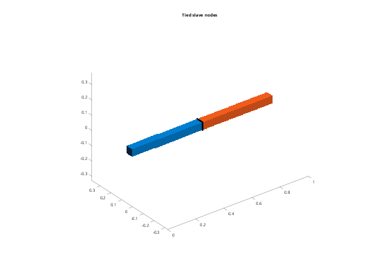
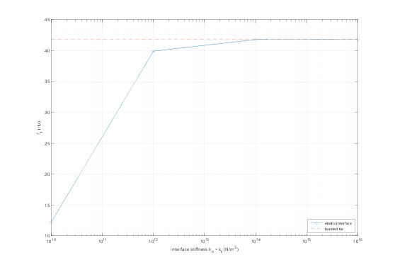

Contents
Tutorial 4 - Connecting bodies: ties and elastic interfaces
Each body is meshed separately, so the meshes do not match at an interface. This tutorial covers:
- bonded ties (exact multi-point constraints)
- choosing master and slave, and the Tol and Select options
- elastic interfaces (distributed springs) with Stiffness
addpath(fileparts(fileparts(mfilename('fullpath')))); out = fullfile(tempdir, 'femTutorials'); if ~isfolder(out), mkdir(out); end steel = fem.material(210e9, 0.3, 7850); clampX0 = @(X) X(:,1) < 1e-9; % reference: one-piece cantilever fem.boxSTL(fullfile(out, 'beam.stl'), [0 0 0], [1000 50 50]); one = fem.Body(fullfile(out, 'beam.stl'), steel, Size = 25, Scale = 1e-3); a = fem.Assembly(); a.add(one); a.fix(1, clampX0); [K, M] = a.system(); [~, fRef] = fem.modes(K, M, 6);
1. Two parts with non-matching meshes
The same beam as two halves, meshed with different element sizes.
fem.boxSTL(fullfile(out, 'left.stl'), [0 0 0], [500 50 50]); fem.boxSTL(fullfile(out, 'right.stl'), [500 0 0], [1000 50 50]); left = fem.Body(fullfile(out, 'left.stl'), steel, Size = 25, Scale = 1e-3); right = fem.Body(fullfile(out, 'right.stl'), steel, Size = 15, Scale = 1e-3);
2. Bonded tie
a.tie(master, slave) takes the slave's surface nodes that lie within Tol of the master surface, and constrains each one to the point of the master face it touches:
u_slave = sum_j N_j(xi) u_master,j
The constraint is exact (no penalty) and is removed in T. Use the finer mesh as slave, so that every slave node has a master face to follow.
a = fem.Assembly(); a.add(left); a.add(right); ns = a.tie('left', 'right'); a.fix('left', clampX0); [K, M, T] = a.system(); [V, f] = fem.modes(K, M, 6); fprintf('%d slave nodes tied\n', ns); disp(table(fRef, f, 'VariableNames', {'one_piece_Hz', 'tied_Hz'})); % The tied nodes are stored in a.Links (global node numbers): L = a.Links(1); X = a.X; figure('Color', 'w'); a.plot(); hold on plot3(X(L.slave,1), X(L.slave,2), X(L.slave,3), 'k.', 'MarkerSize', 12); title('Tied slave nodes'); hold off
105 slave nodes tied
one_piece_Hz tied_Hz
____________ _______
41.826 41.825
41.83 41.829
259.16 259.16
259.24 259.2
713.2 712.99
713.58 713.22

3. Tolerance
By default Tol is 10% of the median face edge of the finer surface (here about 1.5 mm), which absorbs small faceting gaps. Parts that are further apart are not tied: a 5 mm gap gives no tied nodes (with a warning) unless Tol is raised. Set Tol explicitly when it matters.
fem.boxSTL(fullfile(out, 'gap.stl'), [505 0 0], [1000 50 50]); gap = fem.Body(fullfile(out, 'gap.stl'), steel, Size = 15, Scale = 1e-3); b = fem.Assembly(); b.add(left); b.add(gap); fprintf('default Tol: %d nodes\n', b.tie('left', 'gap')); fprintf('Tol = 6 mm: %d nodes\n', b.tie('left', 'gap', Tol = 6e-3));
Warning: No slave nodes within tolerance 0.00146329. default Tol: 0 nodes Tol = 6 mm: 105 nodes
4. Partial bonding with Select
Select restricts the slave nodes, e.g. to model an adhesive layer that covers only part of the interface. Gluing only the lower half (z < 25 mm) makes the joint more flexible, mostly for bending in the xz plane.
b = fem.Assembly(); b.add(left); b.add(right); b.tie('left', 'right', Select = @(X) X(:,3) < 0.025); b.fix('left', clampX0); [Kb, Mb] = b.system(); [~, fp] = fem.modes(Kb, Mb, 2); fprintf('half-bonded joint: f1, f2 = %.2f, %.2f Hz (fully bonded %.2f Hz)\n', fp, f(1));
half-bonded joint: f1, f2 = 40.60, 41.52 Hz (fully bonded 41.82 Hz)
5. Elastic interfaces
With Stiffness = [kn kt] (N/m^3, per unit area) the slave nodes are connected by springs instead, normal (kn) and tangential (kt) to the master surface. This models a compliant layer such as glue, a rubber pad, or contact stiffness. A very stiff interface approaches the bonded tie.
kn = 10.^(10:2:16); f1 = zeros(size(kn)); for k = 1:numel(kn) b = fem.Assembly(); b.add(left); b.add(right); b.tie('left', 'right', Stiffness = kn(k)); % kt = kn b.fix('left', clampX0); [Kb, Mb] = b.system(); [~, f1(k)] = fem.modes(Kb, Mb, 1); end figure('Color', 'w'); semilogx(kn, f1, 'o-', kn, f(1) + 0*kn, '--'); grid on xlabel('interface stiffness k_n = k_t (N/m^3)'); ylabel('f_1 (Hz)'); legend('elastic interface', 'bonded tie', 'Location', 'southeast');
